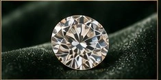
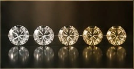
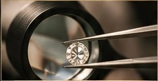
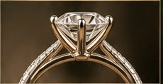

Cut
How well the facets are proportioned and polished. Cut controls sparkle more than anything else, so it is the grade we would protect first. We cut and polish to Excellent or Very Good.
Learn with confidence
What the grades mean, which shape suits which hand, and how to look after a piece for good. Plain language, no sales talk. Bring any of these questions into the showroom and we will show you the differences under a loupe.
Four measures describe a diamond. They matter in roughly this order for how a stone looks on the hand.

How well the facets are proportioned and polished. Cut controls sparkle more than anything else, so it is the grade we would protect first. We cut and polish to Excellent or Very Good.

Graded from D (colorless) to Z (light yellow). In yellow gold, G to J reads white on the hand; the difference from D to G is hard to see without a comparison stone, and costs a great deal.

Natural marks inside and on the stone, graded under 10x magnification from Flawless to Included. VS1 and VS2 stones are clean to the eye. Clarity is about character, not perfection.

Weight, not size. Two stones of the same weight can look different sizes depending on cut and shape. Elongated shapes such as oval and marquise look larger for their weight.
Every shape is in the case and in the engagement ring collection.
Ask us about the specific stone you are considering. We will tell you exactly what documentation it has before you decide, and show you the stone under magnification either way.
The catalog lists natural diamonds by default. Lab-grown stones are chemically the same and cost much less per carat; if you would like a piece made with one, say so and we will quote both.
Unless a listing says otherwise, G to H color and VS1 to VS2 clarity: white to the eye in yellow gold, clean to the eye, and sensibly priced. Every product page lists the stone's grades.
Come in and we will size you in a minute. If you cannot, wrap a strip of paper snugly around the base of the finger, mark where it overlaps, and measure the length in millimeters; we will convert it. Sizing is free on any ring we make.
Yes. We set customer stones and reset heirlooms regularly. We will check the stone first and tell you if there is any risk in setting it.
A personalized experience
Sit down with a jeweler and compare stones side by side under a loupe.